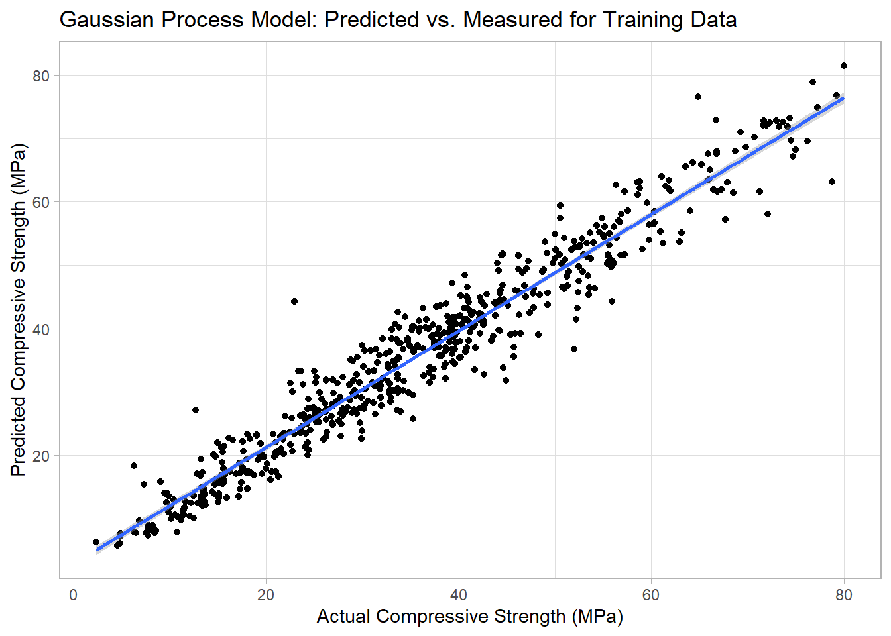
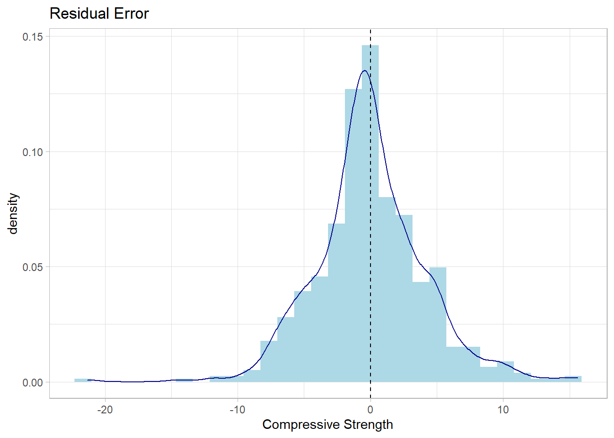

This post shares my first analysis of the Concrete dataset
using a Gaussian Process modeling approach. I was interested in Gaussian
Process models due to the possibility of building a non-linear
regression model which fits the dataset well and allows for predictions
on new data along with the uncertainty in that prediction. I have
previously analyzed this dataset using a variety of machine learning
approaches which allows for a good comparison in prediction performance.
I have read many articles on Gaussian Process prediction however I feel
like I am not entirely grasping the concept quite yet. The modeling
applies a Bayesian approach which takes time to wrap my head around.
The analysis combines R and Python as I wanted to reuse some of the
data cleaning from the previous analyses written in R while the Gaussian
Process model was built using Python. The most relevant articles I could
find on Gaussian Process modeling contained examples in Python so I
decided to use a similar approach. In this post, I am using the
GaussianProcessRegressor model in the Sci-Kit Learn package
to build the model. An RStudio blog
was written in 2019 in R using tfprobability package on the
same dataset but, honestly, I found it difficult to follow and the
modeling results (MSE) was higher than my sklearn model.
Loading the data into R
Here I am reusing the code from previous analyses on the Concrete
dataset. The column names needed to be renamed so that they are more
manageable for further data manipulations.
The reticulate library has been already loaded (not
shown). We want to use Python packages next so the following code
activates the correct Python environment.
## python: C:/miniconda/envs/py3.8/python.exe
## libpython: C:/miniconda/envs/py3.8/python38.dll
## pythonhome: C:/miniconda/envs/py3.8
## version: 3.8.13 | packaged by conda-forge | (default, Mar 25 2022, 05:59:45) [MSC v.1929 64 bit (AMD64)]
## Architecture: 64bit
## numpy: C:/miniconda/envs/py3.8/Lib/site-packages/numpy
## numpy_version: 1.22.4
##
## NOTE: Python version was forced by RETICULATE_PYTHON
Import Pandas and Numpy Python libraries
import pandas as pd
import numpy as np
To work with an R object in Python, you simply need to type
“r.”. For example, to print the first few lines of R
object containing the concrete dataframe, you can run the following
code:
In general, the Sci-kit learn models require the independent (a.k.a.
predictor) variables and dependent (a.k.a. target) variables to be in
separate dataframes. By convention, the predictors are in X and the
target is in y.
X = r.concrete_tbl.drop(['compressive_strength'], axis=1)
y = r.concrete_tbl['compressive_strength']
Building the Gaussian Process Model
The data was then split into training and testing datasets. A 60/40
split was used in this case using an sklearn function.
The model and associated kernels were loaded from sklearn package.
There are many different options for selecting the kernels however I
found that combining the radial basis function (RBF) kernel with a
constant to account for mean offset and a white kernel to account for
noisy data seemed to a successful approach for this type of dataset. And
by success, I mean a fit that converges to a GP model without further
warnings and with a respectable R-squared.
from sklearn.gaussian_process import GaussianProcessRegressor
from sklearn.gaussian_process.kernels import RBF, ConstantKernel, WhiteKernel
import sklearn.metrics as metrics
In a Jupyter environment, please rerun this cell to show the HTML representation or trust the notebook. On GitHub, the HTML representation is unable to render, please try loading this page with nbviewer.org.
We can visualize the predicted vs. actual (measured) compressive
strengths in the figure below.
pred_train <- tibble(y_train = py$y_train, y_pred_tr = py$y_pred_tr)
ggplot(data = pred_train, aes(x = y_train, y = y_pred_tr)) +
geom_point() +
geom_smooth(method = "lm") +
labs(title = "Gaussian Process Model: Predicted vs. Measured for Training Data",
x = "Actual Compressive Strength (MPa)",
y = "Predicted Compressive Strength (MPa)") +
theme_light()
## `geom_smooth()` using formula 'y ~ x'

The distribution of model residuals should ideally be centered around
0 and normally distributed. The residuals for the Gaussian Process Model
are shown in the figure below.
## `stat_bin()` using `bins = 30`. Pick better value with `binwidth`.

The residuals are centered around zero and about evenly distributed
between negative and positive deviations. A few outliers are evident
especially in the prediction beyond -20 MPa. The model performance on
the training data was deemed acceptable to proceed to evaluation of the
test data.
Evaluation of the GP model predictions on the testing data
The model performance was a bit worse for the testing data as
compared to the training data. One of the advantages of the Gaussian
Process model is the estimation of uncertainty in the prediction. In the
figure below, the predicted vs. measured compressive strengths for the
test dataset are displayed along with error bars for +/- 1 standard
deviation.
For the most part, the error bars are intersecting the trendline
however there are a few exceptions.
Summary
A Gaussian process model has been built for the concrete dataset. The
predictive performance of this model was lower than for random forest
and xgboost models (GP R2 = 0.89 vs. RF R2 =
0.94). The main advantage of the Gaussian Process model is the
calculation of prediction error which can be very helpful in assessing
confidence in future predictions.